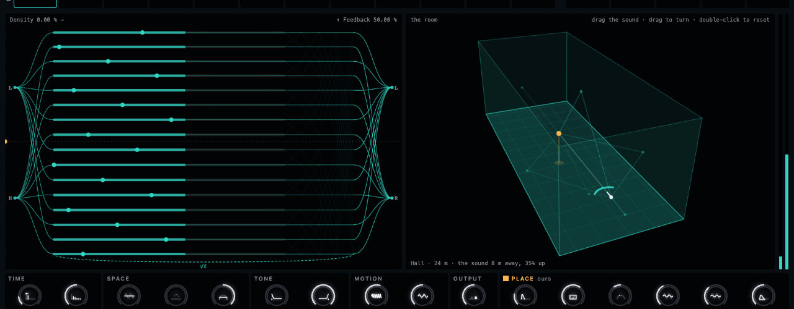
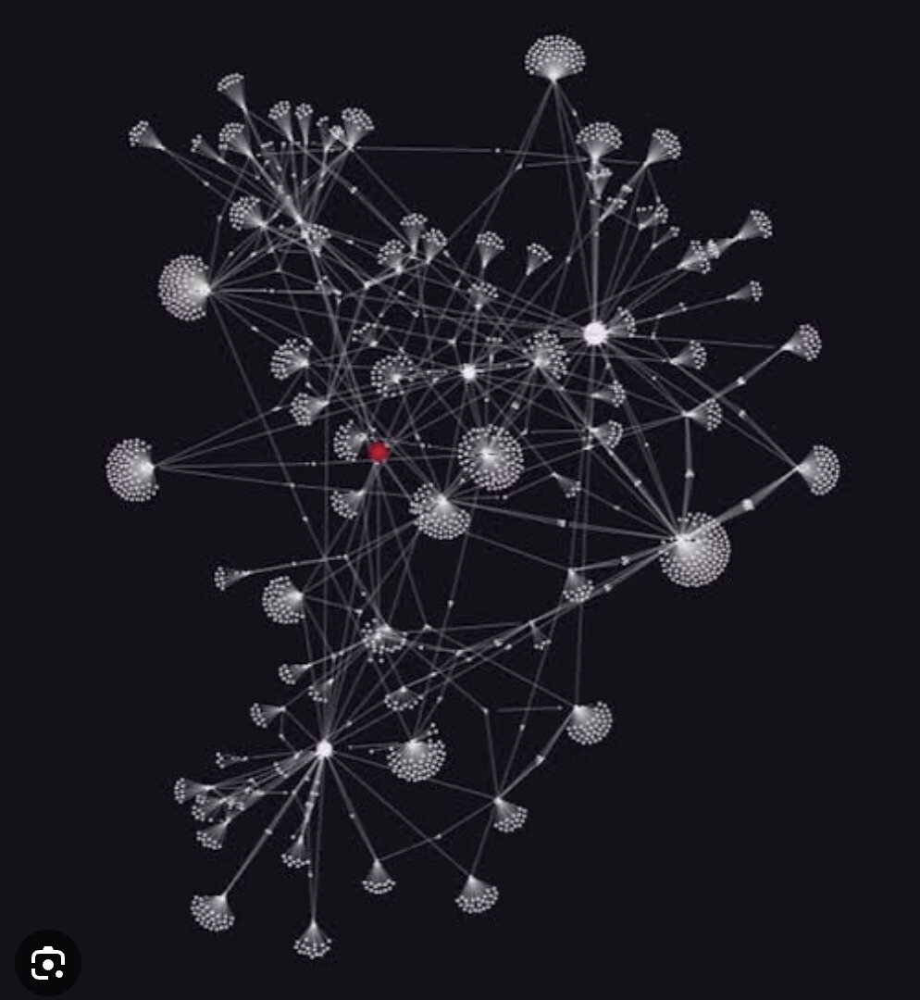
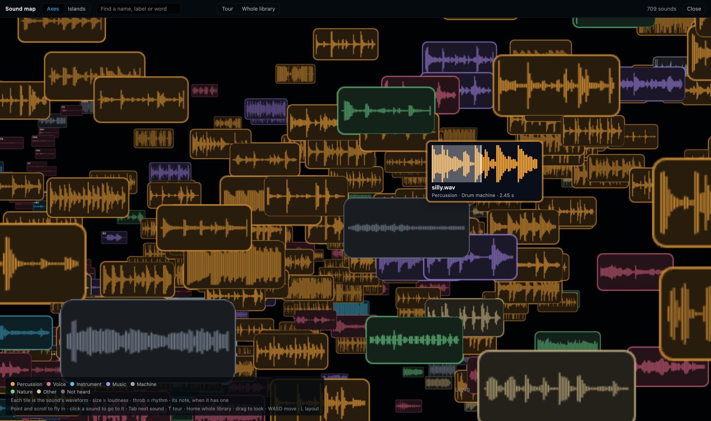
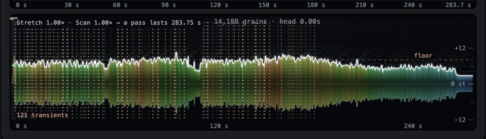

Audio Edit & Tag
A desktop app to browse, tag, edit and reshape a large sound library without ever changing an original file.
ProductAudioBuilt with AICreative production
94klines of Rust in the core
1,563Rust tests, plus ~920 browser tests
119live effects
5stretch engines, all live
The problem
- A large sound library is hard to browse, tag and reshape, and most editors write over the originals.
- The user is one expert working for hours: the screen has to be dense, quiet and quick from the keyboard.
- The goal is a sellable product, then a VST and AU plugin.
What I did
- Set the rule that no original is ever written to. Edits are a clip list, and export always writes a new file with its settings stored inside it.
- Made what you hear exactly what you export: offline renders run through the same engines as live playback.
- Built a sixth stretch engine, tried it, and cut it the same day. The write-up stays as the record.
- Wrote the effects once, in a shared Rust library, so a second product, idMLab, runs the same 86 effects.
- Ran a structured design critique, then chose screens from clickable mock-ups before building them.
- Worked as talk, document, build: every feature written up before it was coded, and corrected after.
What changed
- 970 commits and 23 pull requests in 15 weeks, August to November 2026.
- 119 live effects in one rack, shared with a second product.
- A staged roadmap from product hygiene to a native JUCE app and a VST/AU plugin.
Play the room
This is a small reverb network running in your browser with the Web Audio API. Each line is a delay. Press the button and watch the sound travel.



